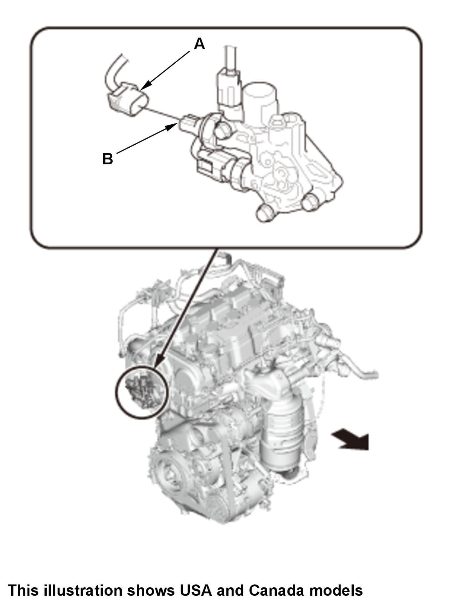

 Courtesy of HONDA, U.S.A., INC.
|
1. Disconnect the connector (A). 2. Check for continuity between the oil pressure switch terminal (B) and the engine (ground). There should be continuity with the engine stopped. There should be no continuity with the engine running.
3. Connect the connector.
|